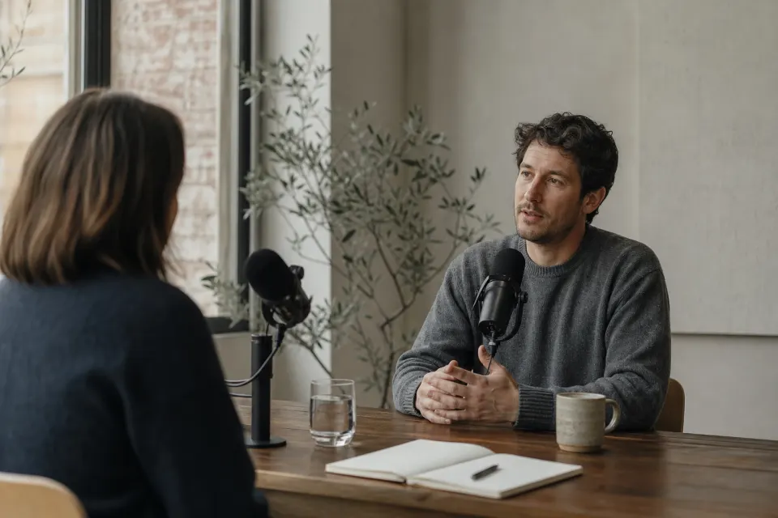

导入本地音频/视频或 B站、YouTube 链接，基于字幕做话题切分与评分，生成切片与合集。全程在你电脑上完成。

访谈播客、对谈、有人声口播。
纯音乐、环境声为主、几乎无对白的片子（主要靠字幕理解）。
安装桌面版，设置里测通模型
自备短样片：3–5 分钟、对白清楚、尽量带 SRT。本地 / B站 / YouTube（自担使用权；我们不托管成片）。
示例链接 · 非 AutoClip 托管 · 请自行确认使用权
开始处理 → 导出 ≥1 条切片。卡住看 讨论 #128
短访谈与超长播客的切法不同；过短素材别套长播客策略，避免片太长或漏章节。
录播课和讲座，看课程页。